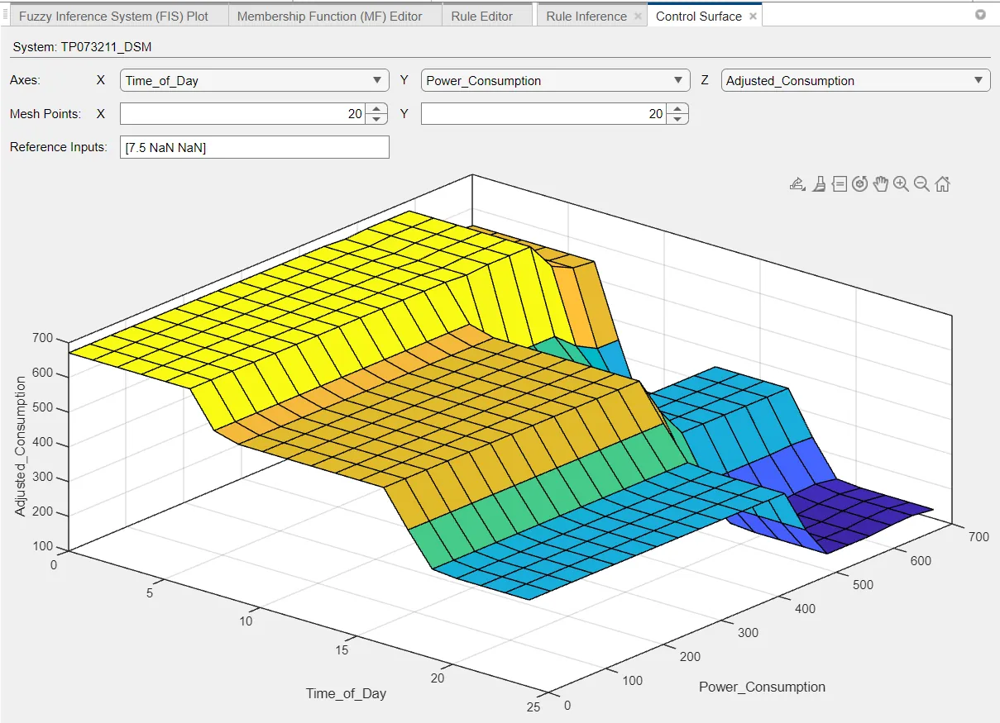
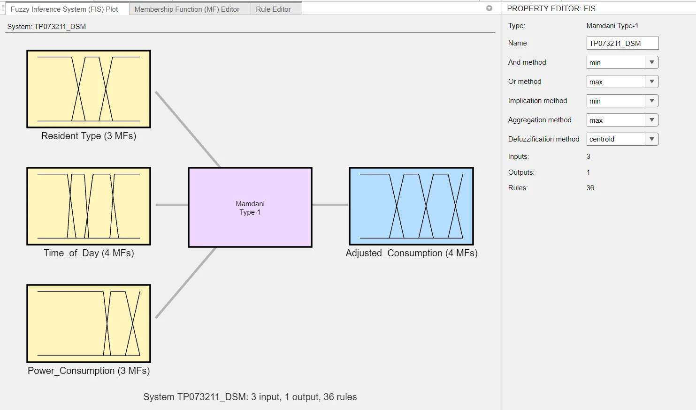
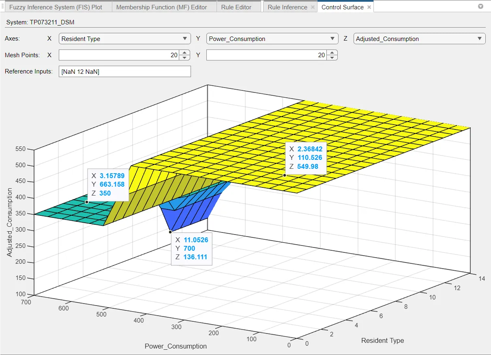
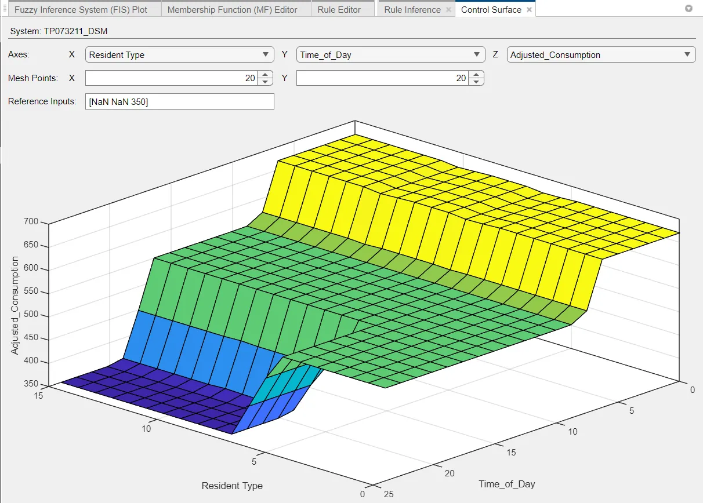
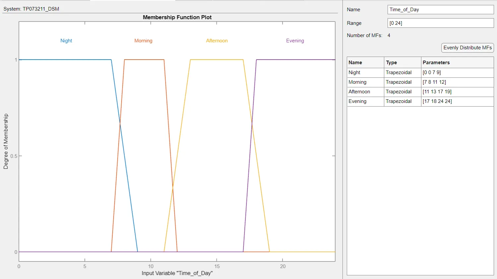
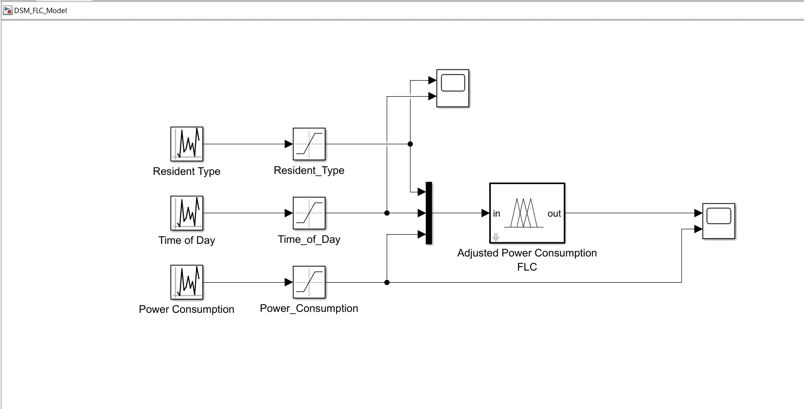
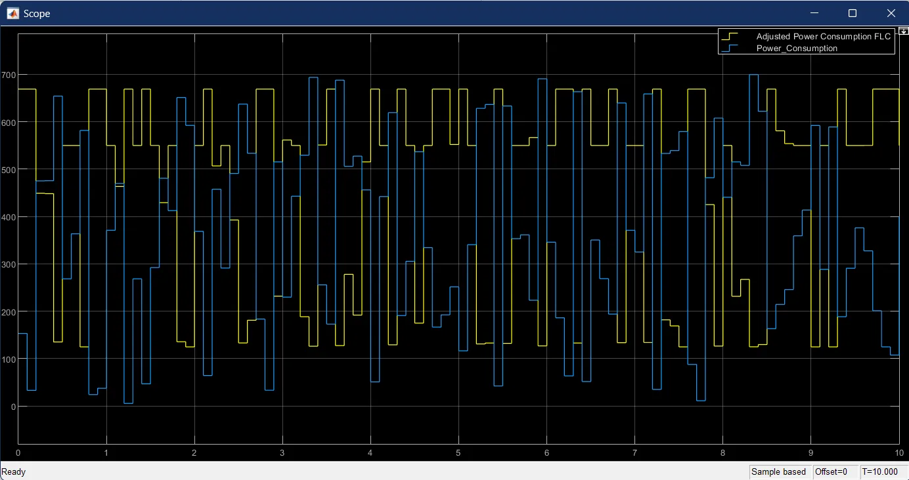
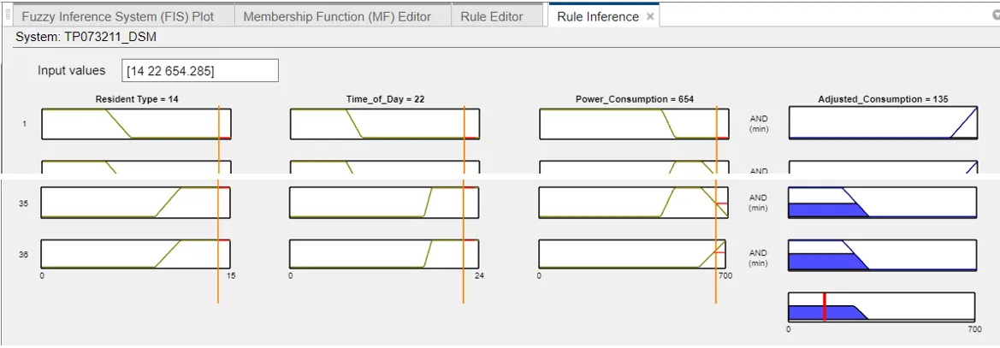

← Archive
Fuzzy-Logic Demand-Side Management
A Mamdani fuzzy controller that adjusts household power use by time of day, resident type and current demand, simulated in Simulink.

Overview
Unpredictable demand is a key problem for microgrids. I built a demand-side management model that aims to keep consumption below 90% of the average.
The fuzzy system has three inputs (resident type, time of day, power consumption) and one output (adjusted consumption), joined by 36 rules, then runs in a Simulink loop.
What I did
- 01Designed membership functions for each input and the output in Fuzzy Logic Designer.
- 02Wrote 36 if-then rules covering occupancy and tariff periods.
- 03Built the Simulink FLC model and analysed the scopes and control surfaces.
- 04Explained the deviations: night-time rules allowed higher use when tariffs are low. I suggested rule and membership-function tuning as the fix.
Signal path
- Resident type
- Time of day
- Consumption
- Mamdani FIS · 36 rules
- Adjusted load
Gallery · 7 images
A closer look






